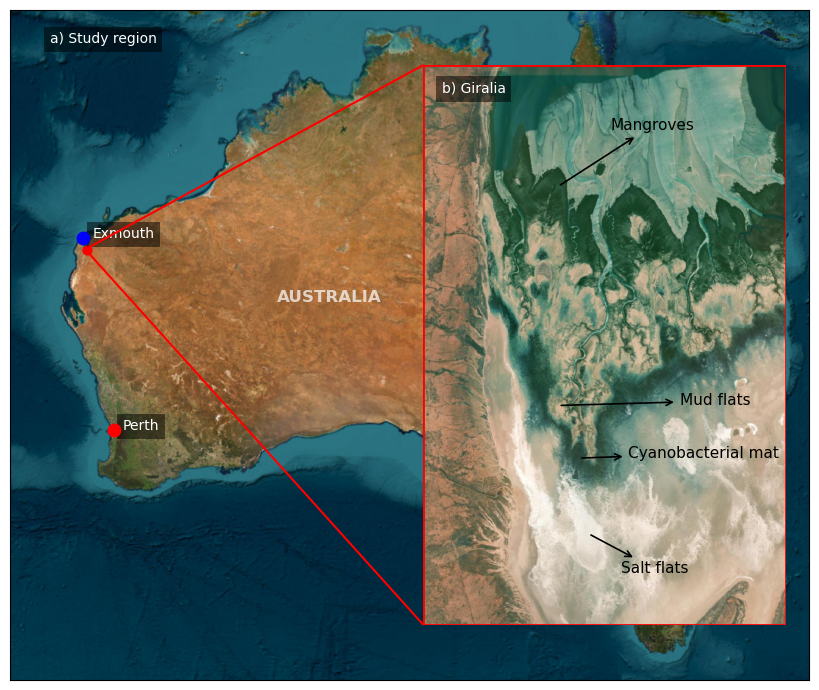

8 Overview
Mangroves are salt-tolerant intertidal trees and shrubs widely distributed across tropical, subtropical, and arid coastlines (Beselly et al., 2021; Spalding et al., 2010). They act as critical nursery and foraging grounds for diverse fauna (FAO, 2023) while providing essential coastal protection by attenuating wave energy and stabilizing shorelines (Hespen et al., 2023). Over the past decade, scientific output on mangrove ecosystems has accelerated—growing by 183% between 2015 and 2025—underscoring their recognized importance in climate adaptation, blue carbon, and coastal resilience.
Accelerating sea-level rise (SLR) and changing storm regimes pose significant threats to coastal environments (Emanuel, 2005; Knutson et al., 2010). While mangroves exhibit inherent resilience (Gilman et al., 2008), landward restrictions (e.g., coastal infrastructure or rocky cliffs) combined with extreme conditions can induce “coastal squeeze,” leading to net habitat loss (Almeida et al., 2025).

In the hyper-arid Pilbara region of Western Australia, specifically Giralia Bay (Exmouth Gulf), intertidal habitats feature a distinct zonation dictated by continuous tidal forces and substrate elevation (Figure 8.1). The cross-shore transition moves landward from a seaward mangrove fringe to mudflats, expansive cyanobacterial (algal) mats, and high-elevation salt flats. Hydrodynamics across this region are predominantly tidally driven, with wave forcing becoming significant primarily during storm and cyclonic events.
8.1 Eco-Geomorphic Modeling Approach
Predicting mangrove response to SLR requires accounting for eco-geomorphic feedbacks and tidal inundation limits (Woodroffe et al., 2016). While inundation dynamics depend on coastal slope, sediment supply, and hydrodynamics (FitzGerald et al., 2008; Passeri et al., 2015; Xie et al., 2022), modeling approaches vary in scale and capability:
- Tree-Scale & Lifecycle Models: Individual-Based Models (e.g., MesoFON, MANGA) and lifecycle frameworks (Grueters et al., 2014; Henderson & Glamore, 2024; Wimmler et al., 2024) resolve fine-scale competition and biomass, but often lack dynamic hydro-morphological coupling.
- Process-Based Hydrodynamic Models: Engines like Delft3D-Flexible Mesh (DFM) simulate regional flow and sediment transport, but traditionally simplify vegetation interactions.
- Coupled Bio-Morphodynamic Models: Hybrid frameworks (e.g., DFMFON, BASEveg) integrate biological dynamics with physical drivers (Beselly et al., 2023; Caponi et al., 2023; Willemsen et al., 2022). However, computational constraints have largely restricted their application to idealized or small-scale domains.
To overcome these limitations, we coupled DFM (Kernkamp et al., 2011) with NBSDynamics (Deltares, 2022), a Python-based vegetation module. Optimized for parallel execution on High-Performance Computing (HPC) platforms, this framework enables regional-scale eco-geomorphic simulations while preserving process-based vegetation–hydrodynamic–morphological feedbacks.
The primary objective of this study is to quantify how projected SLR scenarios alter the spatial extent and structural resilience of mangrove forests (Avicennia marina) within Giralia Bay